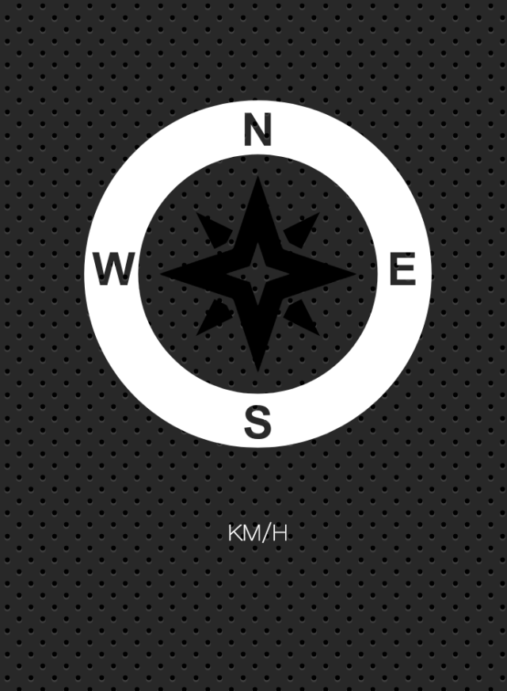

【JS30】Geolocation
21 - Geolocation

主題
利用navigator.geolocation來取得裝置的地理位置與速率。
步驟
Step1. 啟動Local Server
這個練習需要使用到local server，
如果你已經有一個可在本機run起來的server可以直接使用，
或在這層資料夾底下運行npm install來安裝browser-sync，
安裝完成後可以透過指令npm start來啟動localserver(預設port3000)，
npm指令需要下載node.js來使用
Step2. 測試
由於這個練習是需要取得定位資訊，
所以可以透過手機瀏覽器利用npm start啟動server後的內網ip來連線，
或是使用Mac的Xcode開發工具來模擬移動中的裝置(影片教學是使用後者)。
Step3. 撰寫程式
1 | // 取得HTML中的元素 |
- Post title：【JS30】Geolocation
- Post author：Neil Yang
- Create time：2019-05-28 00:00:00
- Post link：https://des86532.github.io/2019/05/28/JS30/JS30-geolocation/
- Copyright Notice：All articles in this blog are licensed under BY-NC-SA unless stating additionally.